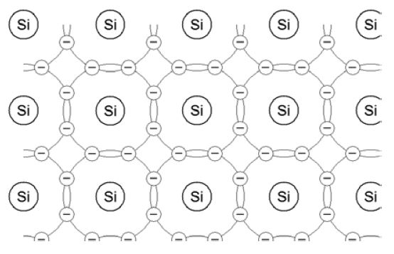
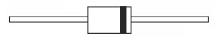
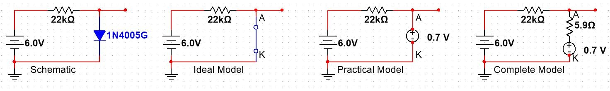

Diode Physics and Models
Original Author: Ross Taylor
Passive Components vs. Active Components
Passive Components
In a previous course, you worked with a group of electrical components that we refer to as Passive Components – components that behave according to simple mathematical relationships in response to changes in the rest of the circuitry. For example, unless you push it beyond its limits, a resistor will always behave very nearly as predicted by
\(V=IR\)
A capacitor will always respond very nearly as predicted by
\(i_C=C(dv/dt)\)
An inductor will always respond very nearly as predicted by
\(v_L=L(di/dt)\)
Both the capacitor and inductor, as predicted by their basic formulas, will generate exponential charging functions when placed in series with a resistor and powered by a fixed voltage source.
By the way, the “very nearly” caveats in the preceding description is an important indication that, by developing these formulas, we are creating simplified mathematical models of real devices. Real devices do other things that we don’t include in our models. For example, the resistance of a resistor changes with temperature, and temperature changes with current, something Ohm’s Law by itself doesn’t account for. Capacitors usually have a small leakage current which means the total current for charging a capacitor will be slightly greater than what is predicted by the model. Inductors are plagued by residual magnetism which means they don’t respond instantaneously to changes in the circuit as predicted by our mathematical model. However, the formulas we use to model the activity of these passive components is usually good enough for the work we’re doing.
Active Components
Active Components, on the other hand, behave differently for different conditions in a circuit. The diode is the simplest of the active components. Other examples that we will study in this course are transistors and operational amplifiers.
Insulators, Conductors, and Semiconductors
On a Periodic Table of the Elements, materials fall into three general categories. Most of the left and central part of the periodic table consists of metals, which conduct electricity and react with non-metals to form Ionic Bonds. On the right side are the non-metals, which do not readily conduct electricity. Most of these react to form Ionic Bonds with metals, but also form Covalent Bonds with other non-metals. There is one family of non-metals which almost never enter into any chemical reactions, that is the Ideal (or Noble) Gases.

Periodic table is licensed under CC BY-SA 4.0
The nature of each element is largely determined by the outermost electrons as they position themselves around the nucleus. These outermost electrons are called the Valence Electrons, and for most elements, there are eight possible locations for valence electrons in what is called the Valence Shell. The remainder of the electrons, combined with the nucleus, form the core of the atom.
Metals typically have fewer than four valence electrons in their Valence Shell. If they have one valence electron, the core charge will be +1; two valence electrons means a core charge of +2; three valence electrons means a core charge of +3.
Non-metals typically have more than four valence electrons in their Valence Shell. If they have seven valence electrons, the core charge will be +7; six valence electrons means a core charge of +6; five valence electrons means a core charge of +5.
Metals, with their small core charges, have a weak attraction for their valence electrons, and so those electrons are relatively free to move as an electrical current when a voltage is applied across the material. In fact, these electrons are officially referred to as “Free Electrons”.

Image from Chemistry LibreTexts
Also, these loosely-attracted valence electrons can be stripped away, leaving a positive ion which will be attracted to negative ions in an Ionic Bond. Ionic bonded compounds are typically non-conductive, because what used to be a free electron in the metal has now been bound to the non-metal atom. The strong attractions between the positive ions and negative ions often result in regularly-defined crystal structures. However, when dissolved in water, the ions become detached from each other, and can move as charged particles in the water, making the solution conductive.

Image from SlideShare
Non-metals with their large core charges, have a strong attraction for their valence electrons, so those electrons are not free to move in a current. As a result, non-metals make good insulators. When non-metals react with other non-metals, they form Covalent Bonds, in which they share pairs of valence electrons. Using the Quantum Mechanical model of atoms to explain this, valence electrons occupy orbitals that can be: empty, contain one electron, or contain two electrons. The most stable condition is for all the orbitals to be filled – i.e. containing two electrons, as is the natural case for the Ideal Gases, and which explains why they do not readily enter into chemical reactions. Covalent bonds result in atoms with single electrons in their orbitals sharing those electrons with other similar atoms so that both atoms now have full orbitals. The shared orbitals bind the atoms together tightly. The electrons in these new compound orbitals are not free to move through the material, so covalently-bonded compounds are, under normal conditions, non-conductive. They continue to be non-conductive when dissolved in water.

Image from expii.com
You’ll notice in the previous discussion statements like “under normal conditions” and “do not readily conduct”. The fact of the matter is that, given sufficient energy, any electron can be dislodged and can become a Free Electron until it loses its energy and is pulled back into either its original location or another similar location. In other words, any material can be made to conduct if the electrical field is strong enough to dislodge it or if it absorbs sufficient energy from, say, a photon striking it.
Up to this point, we’ve discussed Conductors and Insulators. The real point of this discussion was to get to Semiconductors. In a small band of the periodic table between the conductors and insulators, you’ll find a group of elements called the semiconductors. The two most common of these, silicon and germanium, each have four valence electrons, which puts them in the middle between the metals (<4) and the non-metals (>4). Thus, they exhibit characteristics which are neither metallic nor non-metallic. They conduct more readily than non-metals, but they enter into covalent bonds with non-metals. However, their electrons are not as tightly bound into covalent bonds as with typical non-metals, and can be relatively easily become free electrons. The differences between Insulators, Conductors, and Semiconductors can be pictured using an Energy Diagram.

A lot of energy is required to make an insulator conduct, i.e. to move its electrons out of the valence band into the conduction band as free electrons. Almost no energy is required to move the electrons in a conductor, as there are already free electrons in the conduction band. Semiconductors lie halfway between these extremes.
Doped Semiconductor Materials
Silicon is the most commonly-used semiconductor material, so we’ll focus on it as we move toward an understanding of how the diode works. Silicon has four valence electrons, and is therefore Tetravalent.
In one of its natural conditions, silicon bonds covalently into a tetrahedral crystal structure. A Lewis Diagram shows a flattened version of the bonds that take place.

Pure silicon is also called “Intrinsic silicon”, because it contains no other material than silicon atoms. This is not only very difficult to achieve, but it also doesn’t bring us any closer to the answer as to how a diode works. It is much more likely that a crystal of silicon will contain some impurities, and will therefore be “Extrinsic silicon”. If the bulk of the impurity added to the silicon crystal is the same element, we refer to the result as “Doped silicon”.
N-Type silicon
If a very small amount of a five-valence electron, or Pentavalent, dopant is introduced into a silicon crystal, the Pentavalent atoms will be forced into the crystal lattice structure of the silicon crystal, but only four of the electrons will be accepted into the covalent bonds. That leaves the fifth one as a Free Electron, and, just in metal, this electron will be able to move in a current, making this doped crystal a conductor. Since the pentavalent dopant has donated a negatively charged Carrier, the new material is referred to as N-Type Material. The Pentavalent Dopant is referred to as a Donor. The following Lewis Diagram shows a single Phosphorus atom trapped in a silicon crystal, and its resulting Free Electron.

P-Type silicon
If a very small amount of a three-valence electron, or Trivalent, dopant is introduced into a silicon crystal, the Trivalent atoms forced into the crystal will not be able to contribute an electron to all four of the surrounding silicon atoms, so there will be an orbital with only one electron in it. This orbital has an electrical attraction to any available electrons which may temporarily “fall in”, so these are referred to as Holes. If a source of electrons is connected to one end of the crystal and a positive potential is connected to the other end, electrons will migrate from hole to hole through the crystal, again resulting in a current. Although the Holes are stationary, they appear to be moving in the opposite direction to the flow of electrons, so this is referred to as Hole Current. The Trivalent Dopant provide places for electrons to fall into so it is called an Acceptor. The following Lewis Diagram shows a single Aluminum atom trapped in a silicon crystal, and its resulting hole.

In each of these types of material, it is still possible for electrons in covalent bonds to be ejected by sufficient incoming energy, but this small amount of current is only noticeable if there is little other current. Consequently, the main form of current is referred to as Majority Current, and the current from the valence electrons is called Minority Current. So, now we have two new conductive materials. That still doesn’t answer the question of how the diode works. The “magic” happens when we combine these two materials.
The P-N Junction
Normally, when we connect two conductors together, we expect to just have a longer conductor. However, when we bond P-Material to N-Material, we observe some very interesting behavior. Here’s a block diagram to help with understanding what happens.

- Right at the connection point, or P-N Junction, the free electrons in the N-Type material are “pulled into” the holes in the P-Type material, in a process called “Recombination”. That means, at the junction there are no charge carriers, therefore the P-N Junction in its natural state is a non-conductor.
- A net positive charge collects on the N-Type side and a net negative charge collects on the P-Type side of the barrier. This results in a potential difference (voltage) referred to as the Barrier Potential.
What an unexpected result! Connecting two conductors together has created a non-conductor!
Let’s investigate the Barrier Potential a bit more. For silicon junctions, this barrier potential is between 0.5 V and 0.8 V. Not very big! In fact, a potential this small is easy to overcome. Recall, from your Basic Electricity course, that in a circuit with two voltage sources in series, current will flow in the direction dictated by the larger source. In other words, the bigger source overcomes the potential from the smaller source, and drives current “backwards” through it.
In essence, that’s what happens to the P-N Junction when we connect an opposing external voltage source to it. To do this, we apply the positive side of the source to the P-Type material and the negative side to the N-Type material. The negative side of the power supply drives electrons into the N-Type side of the junction, and the positive side of the power supply pulls electrons out of the holes in the P-Type material. With carriers on both sides of the junction, it turns back into a conductor, and current flows.
Forward Biasing is the term used to describe applying an external power supply greater than the barrier potential to a P-N Junction with positive to the P-Type material and negative to the N-Type material. Forward Biasing results in a flow of current through the junction. The resistance of the junction will be very low.
Reverse Biasing is the opposite situation. If an external power supply is applied with the negative side to the P-Type material and positive to the N-Type material, the positive side of the supply draws electrons away from the barrier on the N-Type side, and the negative side of the supply drives electrons into the holes in the P-Type material,widening the barrier and preventing the flow of current. Since no current flows, the junction appears as an open circuit or a very high resistance, and the voltage across it will match the supply voltage. In other words, the reverse-biased P-N Junction has a barrier potential essentially equal to the supply voltage.
Reverse Breakdown will occur if the power supply voltage is increased beyond the maximum voltage the P-N Junction can withstand. At this point, the electrons cascade through the material as they would through a metal conductor, and the resistance becomes very low. (Reverse Breakdown occurs at different voltages for each device, depending on the way the device has been constructed.)
Thermal Destruction happens very quickly in either the forward or reverse direction if the resulting current is too great. Recall that P=I2R. Even though the resistance is low, the squared current part of the calculation can result in a lot of power.
Circuit Biasing involves placing current-limiting devices, usually resistors, in series with the P-N Junction to limit the current and thereby prevent Thermal Destruction. Don’t put a P-N Junction directly across a power supply! You must limit the current using Circuit Biasing!
The Diode
A single P-N junction, wired with connections to the P-Type and N-Type material, is called a Diode. Diodes come in lots of different shapes and varieties. In your parts kit, you have Small Signal Diodes (used to control small currents, usually for logic or radio frequency applications), Rectifier Diodes (used for high-current and often high-voltage applications like power supplies), and Zener Diodes (designed with carefully-controlled Reverse Breakdown voltages for controlling voltages in regulated power supplies).
The symbol for a diode is shown below, along with a picture showing a typical diode and the way the polarity is indicated on the package.


Diode Models
The behavior of the diode in response to changing conditions in the biasing circuit is surprisingly complex, as shown in the oscilloscope X-Y trace below.

This particular diode is a Zener diode, designed with a specific Reverse Breakdown voltage of 5.6 V. Notice the following:
- Between approximately -5 V and +0.6 V, the current is essentially zero. However, with higher resolution, we would actually see a small current, perhaps 500 nA, flowing because of the Minority Carriers in the silicon.
- As we approach 0.7 V, the current increases in an approximately parabolic, or second order manner.
- Beyond this point, the current increases rapidly with very little change in voltage. However, the voltage does increase slightly, indicating that the diode has an internal resistance. Since V=IR, the slope of this section would be 1/R.
- Also, as we approach -5.6 V, the current increases in the opposite direction, again in an approximately parabolic manner.
- Beyond this point, the current again increases rapidly with very little change in voltage. Further analysis would indicate that the slope of this graph, again 1/R, would be quite similar to the slope at +0.7 V.
The condition described in #1 above is the off condition of the diode, where current is practically zero. Most of it would be in the Reverse Biased region, but there is a small section that is technically forward biased but not with a high enough voltage to overcome the Barrier Potential.
The condition described in #3 above is the Forward Biased region, where the voltage remains relatively constant at approximately the Barrier Potential.
The condition described in #5 above is the Reverse Breakdown region.
#2 is referred to as the Forward Knee, due to its rounded shape and sudden change in direction.
#4 is referred to as the Reverse Knee for the same reasons.
This is quite unlike what we would expect to see for a passive component, such as the resistor. This is the Characteristic “Curve” for a resistor:

In this case, a single expression describes the entire response of a resistor to a change in voltage:
\(I=(1/R)V\), or simply Ohm’s Law.
Modelling
To make sense of our world, we as humans “model” everything we see. A model is a simplified description of a system or situation that can be used to predict future outcomes or to help us respond and control the system or situation. Ohm’s Law is a model of the behavior of a resistor, and it is simplified in that it doesn’t take into account the effect of temperature on resistance, it doesn’t include the “skin” effect of high frequency changes in voltage on the resistance, it doesn’t take into account the inductance or capacitance of a physical resistive component, it doesn’t account for changes in resistance due to humidity or radiation, and it doesn’t tell us what happens if too much current is driven through the resistor.
When it comes to diodes, our models typically ignore the parabolic regions at the Forward and Reverse Knees.
Then, depending on how accurately we need to model the device, we may ignore other features:
- We often don’t include the Reverse Breakdown region, as we assume our circuit will be biased to avoid this.
- We often don’t include the slope of the Forward bias region, treating the diode as if its dynamic internal resistance is zero.
- We may even overlook the fact that we need to overcome the Barrier Potential before the diode conducts.
Ideal Model
This is the simplest model. It just says a diode conducts when forward biased and doesn’t conduct when reverse biased – a polarity-controlled switch, if you wish.

Practical Model
This one takes into account the Barrier Potential, which needs to be overcome before the diode can conduct. Otherwise, it behaves like a zero-ohm switch.

Complete Model
This one takes into account more of the actual characteristics, primarily the small internal resistance of the diode when it conducts and the small leakage current due to Minority Carriers. Although the Knees are shown as parabolas, we usually don’t concern ourselves with that unless we have a good reason to.

Applying Models
The question is: which model do I choose, when, and why?
In essence, it depends on how accurate the result needs to be and the circuit characteristics.
If all you care about is presence or absence of current (binary), use the Ideal Model. If you’re working with really large voltages, where 0.7 V is insignificant, and if the resistances are considerably greater than the diode’s dynamic internal resistance, just use the Ideal Model. If you’re working with small voltages and reasonable-sized resistors (like most of what we do in this course), use the Practical Model. If you’re working with large currents in Forward Biasing or really big resistors in Reverse Biasing, you’ll need the Complete Model to explain the otherwise-unexpected results you see.
Examples – Diode Model Comparisons
The following examples the forward junction voltage is assumed to be 0.7 V, the internal resistance of the diode is assumed to be 5.9 Ω, and the reverse leakage current is assumed to be 500 nA. For each, the circuit current and the voltage across the diode (i.e. the voltage at the wire stub referenced to ground) are to be determined.
Example 1:

Ideal Model:
\(V_D = 0.0 V\), since the closed switch is a short.
\(I = V_R/R = (6 - 0)/22 kΩ = 273 μA\)
Practical Model:
\(V_D = 0.7 V\)
\(I = V_R/R = (6 - 0.7)/22 kΩ = 241 μA\)
Complete Model:
We’ll have to start with the current, using KVL:
\(I = (6.0 - 0.7)/(22 kΩ + 5.9 Ω) = 241 μA\)
\(V_D = 0.7 + I * r'_D = 0.701 V\)
Clearly, in this example, the Ideal Model is significantly incorrect, but the Practical and Complete models predict essentially the same result; so, for a situation in which the power supply is relatively small and the current is limited by a substantial series resistor, we don’t need to use the Complete Model.
Example 2:

Ideal Model:
\(V_D = 0.0 V\), since the closed switch is a short.
\(I = V_R/R = (6 - 0)/120 Ω = 50 mA\)
Practical Model:
\(V_D = 0.7 V\)
\(I = V_R/R = (6 - 0.7)/120 Ω = 44.2 mA\)
Complete Model:
We’ll have to start with the current, using KVL:
\(I = (6.0 - 0.7)/(120 Ω + 5.9 Ω) = 42.1 mA\)
\(V_D = 0.7 + I * r'_D = 0.948 V\)
In this example, the Ideal Model is significantly incorrect as in the previous example. But now the Practical is also significantly incorrect, so a proper prediction can only be made using the Complete model. So, for a situation in which the current is quite high as allowed by a relatively small series resistor, we need to use the Complete Model.
Example 3:

Ideal Model:
\(V_D = 0.0 V\), since the closed switch is a short.
\(I = V_R/R = (90 - 0)/56 kΩ = 1.61 mA\)
Practical Model:
\(V_D = 0.7 V\)
\(I = V_R/R = (90 - 0.7)/56 kΩ = 1.59 mA\)
Complete Model:
We’ll have to start with the current, using KVL:
\(I = (90 - 0.7)/(56 kΩ + 5.9 Ω) = 1.59 mA\)
\(V_D = 0.7 + I * r'_D = 0.709 V\)
In this example, the currents predicted by all three models are practically the same, so the Ideal Model would be sufficient for current determination in a circuit where the supply voltage is considerably larger than the diode forward drop. The voltage across the diode is, of course, still significantly wrong, but the voltage across the resistor (90 V instead of 89.3 V) is not significantly incorrect.
Example 4:

Ideal Model:
\(I = 0 A\) because of the open circuit.
\(V_D = 12 V\), since there is no current through the resistor, and therefore no voltage drop from the supply.
Practical Model:
\(I = 0 A\) because of the open circuit.
\(V_D = 12 V\), since there is no current through the resistor, and therefore no voltage drop from the supply.
Complete Model:
\(I = 500 nA\)
\(V_D = 12 - I * R = 12 - 500 nA * 56 kΩ = 11.97 V\)
In this case, the Ideal and Practical models predict the same result, so the Ideal model is suitable. The Complete model also predicts almost the same result for the voltage, and 500 nA is pretty insignificant, so we don’t need the extra complication of the Complete model in a situation where the diode is reverse-biased and in series with a “reasonably sized” resistor.
Example 5:

Ideal Model:
\(I = 0 A\) because of the open circuit.
\(V_D = 12 V\), since there is no current through the resistor, and therefore no voltage drop from the supply.
Practical Model:
\(I = 0 A\) because of the open circuit.
\(V_D = 12 V\), since there is no current through the resistor, and therefore no voltage drop from the supply.
Complete Model:
\(I = 500 nA\)
\(V_D = 12 - I * R = 12 - 500 nA * 10 MΩ = 7.00 V\)
In this case, the Ideal and Practical models predict the same incorrect result, so the Complete model is the only one making accurate predictions.
In this situation, the very large series resistor introduces a significant voltage drop even with a seemingly insignificant leakage current.